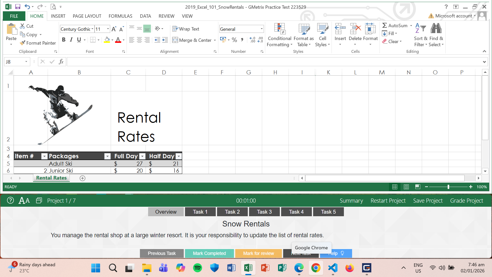

Hello, I'm Aaliyah Cassandra!
Welcome to my portfolio! This website shows my projects, skills,
and achievements as a 1st-year IT student.

Welcome to my portfolio! This website shows my projects, skills,
and achievements as a 1st-year IT student.
I’m Aaliyah Cassandra Gamilla, 19 years old, and I graduated from Cristobal S. Conducto Memorial Integrated National High School under the STEM strand, which helped me develop my interest in technology and problem-solving. I am now a 1st Year IT student at Laguna State Polytechnic University (San Pablo City Campus). I chose Information Technology because I’ve always been interested in computers, gadgets, and learning how technology works.
I really love editing photos and videos, and it’s something I genuinely enjoy doing. I like editing because I want the output to look clean, satisfying, and as perfect as possible. I usually take time to fix even the small details, especially if I feel that something can still be improved. Editing helps me express my creativity and also teaches me patience.
Aside from editing, I am slowly learning more about programming and digital tools, such as creating simple websites using HTML and CSS, and programming languages like C# and Python. Even though I’m still a beginner in this field, I am very willing to learn and improve. I try to stay organized and focused when doing school tasks. My goal is to continue learning, gain more experience, and become a skilled IT professional in the future.
Rizal Elementary School (2013-2019)
Cristobal S. Conducto Memorial Integrated National High School (2019-2023)
Cristobal S. Conducto Memorial Integrated National High School (2023-2025)
Laguna State Polytechnic University – SPC Campus (2025-Present)

Python Essentials 1 Cisco

Microsoft Office Specialist: Excel Associate (Office 2019)
This project is about learning the basic concepts of Python programming through the Cisco Python 1 Essentials course. In this course, I learned how to use variables, data types, simple conditions, loops, and basic functions. At first, programming was challenging, but as I continued practicing, I slowly understood how codes work step by step. This project helped me improve my logical thinking and taught me how to solve simple problems using Python.
This project focuses on my preparation for the Microsoft Office Specialist (MOS) Excel Associate 2019 certification. I learned how to use different Excel features such as formulas, basic functions, tables, charts, and formatting tools. Through this experience, I was able to understand how Excel can be used to organize data and make information easier to read. This project improved my skills in using spreadsheets, which is very useful for school and future work.

In this project, I created a simple website using HTML and CSS. HTML was used to organize the content of the website, while CSS was used to design and style the layout. The website includes a navigation bar, headings, text, images, and different sections. This project helped me understand how websites are made and how design and structure work together. It also improved my skills in organizing information, designing simple layouts, and following proper code structure.
0325-1215@lspu.edu.ph
09614053243
068 Brgy. Paule 1, Rizal Avenue, Rizal, Laguna